조경기사 (2008-05-11 기출문제)
1과목: 조경사
1. 허(虛)와 실(實), 명(明)과 암(喑)등 변화 있는 공간처리와 유기적인 건물 배치로 이름난 중국 소주지방의 명원은?
- 졸정원
- 유원
- 사자림
- 창랑정
(정답률: 67%)

2. 일본 모모야마(桃山)시대의 다정원(茶庭園)은 ‘와비’와 ‘사비’의 개념으로 완성되었는데 이 정원을 설명한 사항중 틀린 것은?
- 인간생활의 부족함을 초월하여 정원에서 미를 찾으려고 하였다.
- 이끼가 끼어 있는 정원석에서 고담(枯淡)과 한적함을 느끼는 개념이다.
- 상징주의적보다는 자연 속에 한 부분으로 대자연 전체의 분위기를 느끼려는 개념이다.
- 서원조 정원과 유사한 화려한 개념이다.
(정답률: 56%)
3. 창덕궁 후원의 괴석(怪石)은 석분(石盆) 위에 설치되어 있는 것이 특징인데 이들이 설치된 공간은 다음 중 어느 곳인가?
- 모두 못 가에 있다.
- 건물 주위나 단(段)위에 있다.
- 깊은 숲 속의 임간(林間)에 있다.
- 시냇가에 있다.
(정답률: 73%)
4. 다음에 설명된 내용은 어떤 식물을 의미하는 것인가?
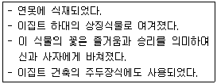
- 자스민
- 연
- 아네모네
- 파피루스
(정답률: 76%)
5. 고대 로마에서는 포름(forum)이라고 불리는 광장이 도시속에 만들어졌다. 그 당시 포름이 가진 기능은?
- 교역
- 기념
- 집회
- 교통
(정답률: 76%)
6. 도산서당에서 매(梅), 죽(竹), 송(松), 국(菊)을 식재하여 이름 붙인 곳은?
- 정우당
- 절우사
- 농운정사
- 천연대
(정답률: 72%)
7. 무로마찌(室町)시대 무인(武人)들에 의한 동산문화(東山文化)가 만들어졌는데, 다음 설명 중 틀린 것은?
- 선(禪)불교의 직관적 추상성이 전통적인 암시성, 시사성 등과 합류되었다.
- 자연의 아름다움을 작은 것으로 세심하게 다듬어 표현하는 경향이 생기게 되었다.
- 새 것이나 완전한 것보다는 낡은 것, 어딘가 결여된 것을 좋아하는 취향도 생겨났다.
- 대표적인 정원으로는 금각사(金閣寺)이다.
(정답률: 52%)
8. 이탈리아 정원의 특징인 노단건축식이 시작된 곳이며, 이탈리아 정원을 수목적인 것에서 건축적 구성으로 전환시키는 계기가 된 정원은?
- 벨베데레원
- 이졸라벨라
- 메디치장
- 감베라이아장
(정답률: 56%)
9. 프랑스의 베르사이유 궁원에 대한 설명으로 잘못된 것은?
- 원래는 수렵지였으나 루이 14세 때에 정원으로 꾸민 것이다.
- 정원설계는 궁정조경가 니콜라스 푸케(NicholasFouquet)가 맡았다.
- 맨 처음에 완성한 정원부분은 감귤원(Orangerie)이었다.
- 십자형의 대 커넬(Canal)이 중심축을 이루고 있다.
(정답률: 79%)
10. 중국의 황가원림(皇家園林)에 대한 설명중 가장 적합하지 않은 것은?
- 그 당시 각 나라의 수도(首都) 및 그 주변에 이궁(離宮)이나 산장(山莊)으로 건립되었다.
- 공간의 구획이 사가원림(私家園林)보다 비정형적이다.
- 황가원림은 상징적이고 실용적인 목적으로 조성되었다.
- 많은 황가원림들은 집금식(集錦式)의 방식으로 조성하였다.
(정답률: 50%)
11. 토피아리와 함께 지나치게 남용되어 영국 자연풍경식 양식 탄생의 촉매가 될 것은?
- 축산
- 노트
- 미원
- 보올링 그린
(정답률: 43%)
12. 일본 아스카(飛鳥) 시대의 정원문화에 관련된 사항이 아닌 것은?
- 하원원(河原院)에 해안 풍경을 딴 정원 조성
- 법륭사(法隆寺)에 조약돌을 깐 실개천과 석축연못
- 황궁의 남정에 수미산과 오교(吳橋) 조성
- 불교사상의 세계관을 배경으로 꾸민 정원
(정답률: 46%)
13. 다음 중 르 노트르가 “정원사의 왕”이라는 영예를 얻게 된 유명한 작품과 관련이 없는 것은?
- 베르사이유 궁원
- 풍텐블로
- 생클루
- 바티칸 궁원
(정답률: 70%)
14. 조경양식의 변천과정을 볼 때 종교의 영향을 받아 형성된 작품이 아닌 것은?
- 회랑식 정원(cloister garden)
- 성곽 정원(castle garden)
- 지구라트(ziggurat)
- 아도니스 원(Adonis garden)
(정답률: 54%)
15. 조선시대에 사회의 부귀와 영화를 등지고 농경하면서 자연과 벗하며 살기 위하여 벽지에 터를 잡아 세워놓은 소박한 주거를 무엇이라 하는가?
- 은서지
- 별장
- 별서
- 별업
(정답률: 72%)
16. 경회루와 여기에 딸린 방지는 조선왕궁의 원지(苑池) 가운데 가장 장엄한 규모다. 이러한 경회루를 조영한 사상적 배경과 가장 관계가 먼 것은?
- 천지인사상
- 음양오행성
- 주역
- 만다라사상
(정답률: 83%)
17. 괴석을 모아서 선산을 만들고 멀리서 물을 끌어 비천을 만들었다고 하는 고려시대의 정원은?
- 귀령각
- 수창궁
- 청연각
- 태평정
(정답률: 53%)
18. 누정의 경관처리 기법 중 가장 기본이 되는 것은?
- 차(借)
- 허(虛)
- 원경(遠景)
- 취경(聚景)
(정답률: 45%)
19. 일본의 유명한 정원 중 영보사, 천룡사, 서방사를 조성한 사람은?
- 귤준망
- 풍신수길
- 몽창국사
- 추고천황
(정답률: 78%)
20. 바빌론의 공중정원은 다음 중 어느 왕 때 만들어졌는가?
- 아메노피스 3세
- 핫셉수트
- 다리우스 1세
- 네부카드네자르
(정답률: 67%)
2과목: 조경계획
21. 경부고속도로와 중앙고석도로가 서로 교차하는 지점에 인터체인지를 설치하려 할 때 가장 이상적인 형태는?
- 클로버형
- 트럼펫형
- 다이아몬드형
- 직결 Y형
(정답률: 55%)
22. 정밀 토양도에서 토양의 명칭을 “SoC2”라고 하였을 경우 “2”는 무엇을 나타내고 있는가?
- 토성
- 지명(地名)
- 침식정도
- 경사도
(정답률: 54%)
23. 미기후가 가장 안정된 상태는?
- 지표면의 알베도가 낮고, 전도율이 낮은 경우
- 지표면의 알베도가 낮고, 전도율이 높은 경우
- 지표면의 알베도가 높고, 전도율이 높은 경우
- 지표면의 알베도가 높고, 전도율이 낮은 경우
(정답률: 28%)
24. 다음 시대별 설계방법론으로 잘못 짝지워진 것은?
- 제1세대 방법론(1960년대) : 체계적 설계과정 중시
- 제2세대 방법론(1970년대) : 이용자 참여설계 중시
- 제3세대 방법론(1980년대) : 설계안의 예측과 반박
- 제4세대 방법론(1990년대) : 전문가적 판단 중시
(정답률: 63%)
25. 이용 후 평가(利用 後 評價)의 목표가 아닌 것은?
- 환경영향평가서의 작성
- 인간과 인공 환경의 관계성 연구
- 환경의 적합성 예측
- 기초환경의 개선 및 새로운 환경의 창조를 위한 의사 결정
(정답률: 55%)
26. 자연공원법령상 공원집단시설지구를 세분하고자 할 떄의 기준에 해당되지 않는 것은?
- 상업시설지
- 행락시설지
- 유보지
- 숙박시설지
(정답률: 38%)
27. 여러 가지의 종합분석 단계들에서 다음 분석의 항목 중 기능분석에 포함되는 것은?
- 자연환경 분석
- 역사성 분석
- 경관 분석
- 재해방지 기능분석
(정답률: 61%)
28. 도시계획시설의 결정ㆍ구조 및 설치기준에 따라 도로의 기능별 분류에 따른 곡선반경 기준으로 틀린 것은? (단, 기능별 분류가 서로 다른 경우 곡선반경이 큰 도로를 기준으로 적용한다.)
- 주간선도로 : 15미터 이상
- 보조간선도로 : 12미터 이상
- 집산도로 : 10미터 이상
- 국지도로 : 8미터 이상
(정답률: 66%)
29. 도시 공원 녹지를 체계화함으로써 얻을 수 있는 장점이 아닌 것은?
- 접근성 증대
- 연속성 증대
- 식별성 증대
- 폐쇄성 증대
(정답률: 64%)
30. 계획 및 설계에서 피드백(feed back) 과정을 가장 옳게 설명한 것은?
- 계획에서는 피드백 과정이 필요하나 설계에서는 필요하지 않다.
- 피드백은 계획 수행 과정상 전단계로 되돌아가 작성된 안을 다시 한번 검토해 보는 것을 말한다.
- 피드백 과정 시에는 조경가만이 참여하며 의뢰인은 참여하지 않는다.
- 피드백은 자료의 분석 후 이들을 종합하는 과정에서 주로 사용되는 기법이다.
(정답률: 63%)
31. 주차장법시행규칙상 노상주차장의 구조ㆍ설비기준에 관한 설명으로 틀린 것은?
- 주간선도로에 설치하여서는 아니된다.
- 너비 6미터 미만의 도로에 설치하여서는 아니된다.
- 종단경사도(자동차 진행방향의 기울기)가 6퍼센트를 초과하는 도로에 설치하여서는 아니된다.
- 고속도로ㆍ자동차전용도로 또는 고가도로에 설치하여서는 아니된다.
(정답률: 48%)
32. 다음 토양의 단면구조 설명 중 집적층(集積層)에 대한 설명으로 옳은 것은?
- 점토, 철, 유기물 등이 혼합되어 괴상구조(塊狀構造)를 띠고 있는 토양층이다.
- 무기물층으로 토양발달이 거의 안된 모암층이다.
- 낙엽이나 나뭇가지 등으로 구성되어 있는 층이다.
- 식물체의 원형을 육안으로 볼 수 있는 층이다.
(정답률: 63%)
33. 사람의 활동 중지에 의해 얻어지는 자유나 남는 시간을 가리키는 것은?
- 여가(leisure)
- 레크레이션(recreation)
- 관광(tourism)
- 스포츠(sports)
(정답률: 71%)
34. 우리나라 자연공원법시행령에서 정하고 있는 자연공원의 공원시설 및 분류로 적합하지 않은 것은?
- 도로, 주차장, 궤도 등의 교통ㆍ운수시설
- 휴게소, 광장, 야영장 등의 휴양 및 편익시설
- 약국, 식품접객업소(유흥주점을 제외한다.), 유기장 등의 상업시설
- 수족관, 박물관, 야외음악당 등의 교양시설
(정답률: 40%)
35. 이용자의 태도조사에 이용되는 리커트 척도(Likert scale)는 다음의 어느 척도 유형에 속하는가?
- 명목척(nominal scale)
- 순서척(ordinal scale)
- 등간척(interval scale)
- 비례척(ratio cale)
(정답률: 55%)
36. 하워드(E. Howard)가 제안한 전원도시의 특징이 아닌 것은?
- 도시의 물리적 확장을 제한하기 위하여 농지로 오픈 스페이스(open space)를 확보한다.
- 지역성장 거점을 확보한다.
- 인구의 대부분을 유치할 수 있는 산업을 확보한다.
- 도시성장과 번영에 의한 개발이익의 일부는 환수하며 계획의 철저한 보존을 위해 토지를 영구히 공유화한다.
(정답률: 46%)
37. 도시공원 및 녹지 등에 관한 법률에서 정하고 있는 원칙적인 녹지 활용계획의 대상 기준 및 녹지활용계약 기간(단, 최초의 계약 당시 토지의 상태에 따라 계약기간을 조정하는 경우는 제외한다.)으로 맞는 것은?
- 200m2이상의 복합토지, 계약기간은 3년 이상
- 300m2이상의 복합토지, 계약기간은 3년 이상
- 200m2이상의 단일토지, 계약기간은 5년 이상
- 300m2이상의 단일토지, 계약기간은 5년 이상
(정답률: 41%)
38. 도시공원 및 녹지 등에 관한 법률에서 도시공원의 점용 허가를 받지 않아도 되는 것은?
- 산림의 간벌
- 토석의 채취
- 물건의 적치
- 죽목의 벌채
(정답률: 57%)
39. 도시공원 및 녹지 등에 관한 법률상 개발제한구역 및 녹지지역을 제외한 도시지역 안에 있어서의 도시공원의 1인당 확보 면적 기준은? (단, 해당 도시지역 안에 거주하는 주민의 경우)
- 3m2이상
- 4m2이상
- 6m2이상
- 10m2이상
(정답률: 49%)
40. 도시공원 및 녹지 등에 관한 법률 시행규칙상 도시공원 안의 공원시설 부지면적 기준이 틀린 것은?
- 소공원 : 100분의 20 이하
- 수변공간 : 100분의 40 이하
- 역사공원 : 100분의 40 이하
- 체육공원(3만제곱미터 미만) : 100분의 50 이하
(정답률: 34%)
3과목: 조경설계
41. 제이콥스와 웨이(Jacobs & Way)는 경관의 시각적 흡수력(Visual absorption)은 경관의 투과(Trans-parency)와 복잡도(Complexity)에 의해 좌우된다고 하였다. 시각적 흡수력이 가장 높은 것은?
- 투과성이 높고, 복잡도가 낮은 경우
- 투과성이 높고, 복잡도가 높은 경우
- 투과성이 낮고, 복잡도가 낮은 경우
- 투과성이 낮고, 복잡도가 높은 경우
(정답률: 50%)
42. 도면결합법(overlay method)을 주로 사용하여 경관의 생태적 목록을 종합하여 분석에 활용한 사람은?
- Lynch
- McHarg
- Litton
- Leopold
(정답률: 71%)
43. 경계석 설치시 그 기능이 가장 낮은 것은?
- 유동성 포장재의 경계부
- 차도와 식재지 사이
- 자연석 원로의 경계부
- 차도와 보도 사이
(정답률: 59%)
44. 다음의 그림은 2가지의 정의를 보일 수 있다. 하나는 흰 술잔으로, 다른 하나는 얼굴이 마주보고 있는 형상으로 즉, 일정한 시계 내에서 특정한 형태 혹은 사물이 돋보이며, 그밖의 겻들은 주의를 끌지 못하는 원리를 무엇이라 하는가?
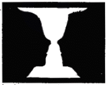
- 균형과 대치
- 도형과 배경
- 반복과 조화
- 리듬과 변화
(정답률: 80%)
45. 어린이미끄럼틀의 미끄럼대에 있어서 일반적인 미끄럼판의 각도와 폭이 가장 적합하게 짝지어진 것은?
- 각도 : 20 ~ 30°, 폭 : 20 ~ 30cm
- 각도 : 30 ~ 40°, 폭 : 40 ~ 50cm
- 각도 : 20 ~ 30°, 폭 : 40 ~ 50cm
- 각도 : 30 ~ 40°, 폭 : 20 ~ 30cm
(정답률: 58%)
46. 농구장의 설치에 관한 설명으로 부적합한 것은?
- 미끄럼방지를 위해 아스팔트계나 합성수지계 등의 포장이 좋다.
- 2면 이상 설치시 최저 2m 정도의 간격을 확보하여야 한다.
- 규격 경비장은 경계선의 안쪽을 기분으로 길이 28m, 너비 15m로 한다.
- 농구코트의 방위는 남-북 축을 기준으로 한다.
(정답률: 36%)
47. 해가 지고 주위가 어둑어둑 해질 무렵 낮에 화사하게 보이던 빨간 꽇은 거무스름해져 어둡게 보이고, 그 대신 연한 파랑이나 초록의 물체들이 밝게 보이는 현상은?
- 베졸트-뷔뤼케 현상
- 색음현상
- 푸르키니에 현상
- 대비현상
(정답률: 73%)
48. 도면에서 치수기입에 대한 성명 중 틀린 것은?
- 치수의 단위는 mm를 원칙으로 하고, 단위 기호도 기입한다.
- 치수 수치는 치수선에 평행하게 기입하고, 되도록 치수선의 중앙 위쪽에 기입한다.
- 치수는 아라비아 숫자로 나타낸다.
- 협소한 간격이 연속될 때에는 인출선을 써서 치수를 기입한다.
(정답률: 73%)
49. 일반적으로 많이 사용되는 제도용지의 규격(mm)을 표시한 것들 중 잘못된 것은?
- A1 : 594×841
- A4 : 210×297
- B2 : 515×728
- B5 : 257× 364
(정답률: 34%)
50. 다음 중 옥외 3인용 평벤치의 좌판(座板) 길이로 가장 적합한 것은?
- 90cm
- 120cm
- 150cm
- 180cm
(정답률: 50%)
51. 다음 중 시각적 선호도(visual preference)를 결정 짓는 주요 변수가 아닌 것은?
- 물리적 변수
- 상징적 변수
- 개인적 변수
- 사회적 변수
(정답률: 57%)
52. 다음 중 특수 투상도가 아닌 것은?
- 등각투상법
- 부등각투상법
- 사투상법
- 제3각법
(정답률: 78%)
53. 다음 중 디자인의 가장 보편적인 원리로 하나의 조화있는 패턴 또는 많은 요소들 사이에 확립된 질서 혹은 규칙을 무엇이라고 하는가?
- 다양성
- 통일성
- 강조
- 비례
(정답률: 59%)
54. 존 딕스 헌트(John Dixon Hunt)가 자연을 분류한 3가지 유형에 포함되지 않는 것은?
- 원생자연(wild nature)
- 문화자연(cultural nature)
- 정원(garden)
- 이상향(utopia)
(정답률: 56%)
55. 먼셀(Munsell)의 색 표기법에서 G5/4와 Y5/3의 관계를 바르게 설명한 것은?
- 채도가 같고 명도와 색상이 상이하다.
- 색상이 같고 명도와 채도가 상이하다.
- 명도가 같고 색상과 채도가 상이하다.
- 명도, 색상, 채도가 모두 상이하다.
(정답률: 42%)
56. 설계에 있어서 3차원적인 공간 한정 요소(space divider)의 구성이 아닌 것은?
- 수목
- 지표면
- 벽면
- 천정면
(정답률: 60%)
57. 집단의 선호패턴을 고려해볼 때 시각적 복잡성에 따른 시각적 선호도를 나타내는 그래프는?
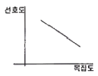
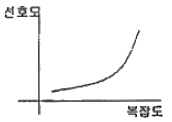
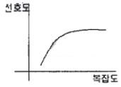
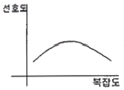
(정답률: 57%)
58. 기본계획안은 보통 부문별로 나누어서 별도의 도면에 표현한다. 그렇다면 전기, 전화, 상하수도, 가스, 진개(塵芥)처리 등의 공급 처리시설에 관계되는 내용은 다음 중 어느 계획에 포함되는가?
- 건축조경계획
- 하부구조계획
- 시설물배치계획
- 시설물세부계획
(정답률: 67%)
59. 조경설계에서 수경요소(waterscape)의 기능으로 효과가 가장 약한 것은?
- 공기 냉각기능
- 동선의 연결기능
- 소음 완충기능
- 레크레이션의 수단기능
(정답률: 70%)
60. 시골마을의 정자목은 K.Lynch의 이미지 분석으로 보았을 때 다음 중 어느 것에 가장 가까운가?
- 결절점(node)
- 단(edge)
- 표지물(landmark)
- 구역(district)
(정답률: 54%)
4과목: 조경식재
61. 일반적인 수목 성상별 식재시기를 나타낸 것 중 틀린 것은?
- 낙엽수류 : 10월하순 ~ 11월중순, 해토직후 ~ 3월중순
- 상록활엽수류 : 3월하순 ~ 4월중순
- 침엽수류 : 해토직후 ~ 4월상순, 9월하순 ~ 10월하순
- 대나무류(조릿대, 이대) : 5월하순 ~ 6월중순
(정답률: 39%)
62. 다음 중 브라운 블랑케(Braun-Blanquet)에 의한 식생 조사 항목이 아닌 것은?
- 식물의 종(種)
- 피도(被度)
- 기공수(氣孔數)
- 군도(群度)
(정답률: 59%)
63. 다음 중 부식(Humus)의 작용으로 맞지 않는 것은?
- 토양의 물리적 성질을 양호하게 한다.
- 보수력을 낮추고 건조를 조장한다.
- 양분의 흡수 및 보유능력을 높인다.
- 토양 미생물의 활동을 좋게 한다.
(정답률: 55%)
64. 식재설계 및 공사진행 과정으로 알맞게 구성된 것은?
- 기본계획 → 기본설계 → 실시설계 → 설계도면 작성 → 견적 및 발주 → 시공
- 견적 및 발주 → 기본계획 → 기본설계 → 실시설계 → 설계도면 작성 → 시공
- 기본계획 → 기본설계 → 견적 및 발주 → 실시설계 → 설계도면 작성 → 시공
- 기본계획 → 기본설계 → 실시설계 → 견적 및 발주 → 설계도면 작성 → 시공
(정답률: 38%)
65. 다음 [보 기]가 설명하고 있는 수종은?
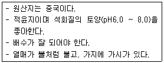
- Pyracantha angustifolia
- Taxodium distichum
- Saliz pseudolasiogyne
- Alnus japonica
(정답률: 52%)
66. 다음 생물권 중 1차 종 생산력(cal/m2/연)이 가장 높은 곳은?
- 하구역(河口域)
- 초원
- 북방침엽수림
- 목장
(정답률: 44%)
67. 다음 중 추자목(楸子木), 추목(楸木), 핵도추(核桃楸) 라고도 하며, 양수이면서 녹음수나 독립수로 많이 이용되고, 발근이 어려워 삽목보다 실생과 접목을 이용하여 번식하는 수종은?
- Juglans mandshurica Max
- Populus alba L.
- Populus nigra var. italica Koehne
- Nerium indicum Mill.
(정답률: 35%)
68. 잎이 나오기 전에 꽃이 먼저 피는 수목으로만 짝지어진 것은?
- Forsythia koreana, Magnolia grandiflora
- Sophora japonica, Cornus officinalis
- Rhododendron mucronulatum, Cercis chinensis
- Lagerstroemia indica, Prunus persica
(정답률: 32%)
69. 개체군 분포를 나타내는 분산은 흔히 3가지 기본형으로 구분하고 있는데 이들 기본형 중 자연계에서 가장 흔히 볼 수 있으며, 고분산으로 해석되는 형태는?
- 균일분포형
- 괴상분포형
- 무작위분포형
- 불규칙분포형
(정답률: 53%)
70. 법면 식재공법의 종류 중 식물의 도입이 곤란한 불량토질에 사용하고, 피복속도가 느리기는 하지만 비료의 효과가 오래도록 계속되는 공법은?
- 식생반공(植生盤工)
- 식생대공(植生袋工)
- 식생혈공(植生穴工)
- 식생조공(植生條工)
(정답률: 63%)
71. 식물이 자라는 토양은 고상(固相), 액상(液相), 기상(氣相)의 3상으로 구성되어 있는데, 이들 각각의 이상적인 구성비는 몇 %가 적합한가?
- 45%, 30%, 25%
- 50%, 25%, 25%
- 40%, 30%, 30%
- 30%, 40%, 30%
(정답률: 70%)
72. 다음의 조경식물 중 야생동물의 식이실물(edible plants)에 해당되지 않는 것은?
- Sorbus alnifolia
- Sorbus commixta
- Diospyros kaki
- Juniperus chinensis
(정답률: 50%)
73. 고속도로 조경은 주행과 관련된 식재, 사고방지를 위한 식재, 경관을 위한 식재 및 기타 식재 등으로 구분하는데, 다음 중 사고방지를 위한 식재가 아닌 것은?
- 지표식재
- 차광식재
- 완충식재
- 명암순응식재
(정답률: 66%)
74. 계절적인 변화를 보이는 배식을 하고자 한다. 다음 중 봄철부터 꽃의 개화순가 옳게 나열된 것은?
- 산수유 → 고광나무 → 팔손이나무 → 무궁화
- 산수유 → 무궁화 → 고광나무 → 팔손이나무
- 산수유 → 고광나무 → 무궁화 → 팔손이나무
- 산수유 → 팔손이나무 → 무궁화 → 고광나무
(정답률: 55%)
75. 학명은 Tilia amurensis로 우리나라에서는 사찰조경에 많이 쓰이며, 중용수로 생장이 빠르고 수형이 아름다워 가로수, 공원수 등으로 적합한 나무는?
- 보리수나무
- 계수나무
- 염주나무
- 피나무
(정답률: 47%)
76. Pinus strobus L. 의 설명으로 틀린 것은?
- 소나무과에 속한다.
- 잎은 상록성의 선형으로 5개씩 속생한다.
- Lacebark pine이라고도 한다.
- 번식 방법은 주로 실생으로 8월 하순경에 채종하여 노천매장 후에 파종한다.
(정답률: 35%)
77. 일반적으로 표준품셈에서 식재시 수목의 규격을 표시하는 항목에 포함하지 않는 것은?
- 근원직경
- 수고
- 흉고직경
- 지하고
(정답률: 72%)
78. 수목의 뿌리분뜨기(굴취법)에 관한 설명으로 적당하지 않은 것은?
- 표준적인 뿌리분의 크기는 근원직겨의 4배를 기준으로 한다.
- 뿌리분의 깊이는 세근의 밀도가 현저히 감소되는 부위까지 한다.
- 천근성 수종은 접시분으로 하는 것이 좋다.
- 뿌리분의 둘레는 다각형, 옆면은 경사, 밑면은 쐐기형으로 다듬는다.
(정답률: 43%)
79. 수목식재의 관개 시스템 중 물을 효율적으로 이용 할 수 없어 중동 지역과 같은 사막 지역의 관수 장치로 사용이 가장 부적합한 것은?
- 이스라엘 점적장치
- 유공(有孔)호스
- 회전식 스프링클러
- 지하관개법
(정답률: 43%)
80. 다음 차나무과(Theaceae) 수목 중 낙엽활엽교목인 것은?
- Camellia sinensis
- Cleyera japoonica
- Ternstroemia japonica
- Stewartia koreana
(정답률: 30%)
5과목: 조경시공구조학
81. 문화재 수리 공간에서 줄눈형태의 따른 쌓기법의 설명 중 틀린것은?
- 막 쌓기는 석재의 형태대로 가로ㆍ세로 줄눈을 고려하지 않고 쌓는다.
- 퇴물림 쌓기는 석재의 일부를 점차 바깥쪽으로 내밀면서 쌓는다.
- 바른층 쌓기 한 켜에서는 석재의 높이가 동일하고, 매켜마다 가로줄눈이 일직선으로 연속되게 쌓는다.
- 허튼층 쌓기는 한 켜에서 가로줄눈이 일직선으로 연속되지 않고, 각기 높이가 다른 돌을 써서 막힌줄눈이 되게 쌓는다.
(정답률: 64%)
82. 표준형 벽돌을 사용하여, 0.5B 쌓기 할 때 1m2당 소요 기준량은 얼마인가? (단, 벽돌규격의 단위는 mm이며, 줄눈간격은 1cm 이다.)
- 약 58매
- 약 92매
- 약65매
- 약75매
(정답률: 50%)
83. 지형도에서의 등고선에 관한 설명으로 옳은 것은?
- 계곡선은 지모 상태를 명시하고 표고의 읽음을 쉽게 하기 위하여 주곡선 간격의 1/5거리로 표시한 곡선이다.
- 산령과 계곡이 만나 이들의 등고선이 서로 쌍곡선을 이루는 것과 같은 부분을 고개(saddle)라고 한다.
- 등고선은 급경사지에서 간격이 넓고 완경사지에서는 좁다.
- 조곡선은 주곡선만으로 지형을 완전하게 표시할 수 없을 때 주곡선 간격의 2배로 표시한 곡선이다.
(정답률: 63%)
84. 다음 재료를 사용하여 동일한 규격의 시설물을 축조하였을 경우, 고정하중(固定荷重)이 가장 큰 구조체는?
- 호박돌
- 목재
- 화강석
- 철근콘크리트
(정답률: 40%)
85. 다음 그림과 같은 힘이 작용할 떄 0 점에 대한 모멘트의 크기는 얼마인가/
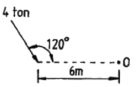
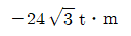
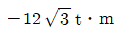
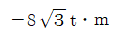
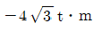
(정답률: 43%)
86. 다음 공정표에서 전체 공사기간은 얼마인가?
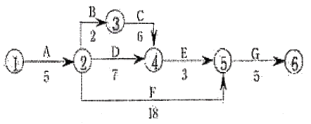
- 20일
- 21일
- 28일
- 46일
(정답률: 64%)
87. 건설기술관리법상에서 건설공사가 설계도서 기타 관계 서류와 관계 법령의 내용대로 시공되는지의 여부를 확인하는 것은?
- 시공감리
- 책임감리
- 수시감리
- 검측감리
(정답률: 35%)
88. 다음 중 화강암에 대한 특성 설명으로 틀린것은?
- 구조용 석조로 쓰기에 매우 훌륭한 특질을 나타내며, 가장 많이 사용되고 있따.
- 고열과 불에 강하다.
- 다른 석재와 비교해 단위면적 당 압축강도는 높고, 습수율은 적다.
- 내산성이 우수하다.
(정답률: 24%)
89. 사진면으로부터 얻어진 여러 가지 피사체의 정보를 목적에 따라 해석하기 위해 사용되는 적외선 항공사진의 특징 설명으로 틀린 것은?
- 도로는 흰색으로 선명하게 나타나므로 판독하기 쉽다.
- 침엽수와 활엽수의 구분이 쉽다.
- 명료하게 해안선이 나타난다.
- 시가지보다는 농경지나 삼림의 판독에 유리하다.
(정답률: 30%)
90. 대부분의 살수기(撒水器)는 삼각형이나 사각형의 고유한 살수단면을 가지게 되는데 그 중 삼각형 형태로 배치하려고 할 때 열과 열사이의 거리는 살수기 간격의 어느 정도로 하여야 효과적인가?
- 같은 간격의 거리
- 살수기 간격의 약0.87배
- 살수기 간격의 0.5배
- 살수기 간격의 약0.37배
(정답률: 63%)
91. 그림의 다각형 트래버스 측량에서 측정하는 편각이란 어느 것인가?
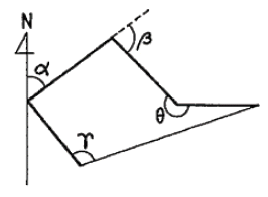
- α
- β
- r
- θ
(정답률: 62%)
92. 목재를 섬유 방향과 평행으로 옆으로 대어 붙이는 것을 무엇이라 하는가?
- 쪽매
- 이음
- 맞춤
- 재춤
(정답률: 52%)
93. 다음 불도저(bulldozer)의 특징 설명으로 틀린 것은?
- 토사의 절토, 성토, 다지기, 운반 등의 작업에 쓰이는 대표적인 토공기계이다.
- 작업 범위는 소형 50m 에서 대형 100m 정도이다.
- 무한궤도식(無限軌道式)은 승차감과 기동성이 좋고, 다짐효과도 커서 장거리작업에 효과적이다.
- 토공판의 각도에 따라 스트레이트 도저, 앵글 도저, 틸트 도저로 분류한다.
(정답률: 56%)
94. 도로의 수평노선 곡선부에서 반경이 30m, 교각(交角)을 15°로 한다면 이 수평노선의 곡선장은 얼마인가?
- 약 1.25m
- 약 2.50m
- 약 7.85m
- 약 8.50m
(정답률: 53%)
95. 옹벽의 안정성 검토시 안정조건 설명으로 틀린 것은?
- 옹벽에 작용하는 토압과 옹벽중량의 합력이 옹벽기부의 중앙 삼분점 부분에 작용한다.
- 옹벽의 활동력에 대한 저항력의 안전율은 1.5 ~ 2.0을 적용한다.
- 작용점에서 전도에 의한 저항모멘트 값이 회전모멘트 값 보다 커야만 옹벽이 안정하다.
- 기초지반에 작용하는 최대압축응력이 지반의 지지력 보다 크면 옹벽은 안정하다.
(정답률: 40%)
96. 다음 토량 변화율 C값에 대한 설명으로 틀린 것은?
- 다져진 상태의 토량을 자연상태의 토량으로 나눈값이다.
- 성토에 소요되는 토량을 구하는데 사용된다.
- C값을 과소 적용하면 잔토가 발생한다.
- 점질토의 흙보다 자각의 C값이 더 작다.
(정답률: 38%)
97. 암절토 비탈면과 같이 환경 조건이 극히 불량한 지역을 녹화하는 공법은?
- 식생 기반재 뿜어 붙이기공
- 잔디떼심기공
- 지하경 뿜어 붙이기공
- 식생매트공
(정답률: 58%)
98. 도장공사의 품 산정에 있어서 롤러 칠의 경우 기구손료는 어떻게 적용하는가?
- 품의 2% 가산
- 재료비의 2% 가감
- 품의 5% 가산
- 재료비의 5% 가감
(정답률: 36%)
99. 보의 종류에서 한쪽이 고정되어 있고, 다른 쪽은 자유로운 상태로 되어 있는 구조체의 명칭은?
- 단순보
- 캔틸레버보
- 내다지보
- 고정보
(정답률: 73%)
100. 다음 중 빛과 관련된 용어 설명이 옳은 것은?
- 광속 : 광원의 세기를 표시하는 단위
- 광도 : 방사에너지 시간에 대한 비율
- 조도 : 단위 면에 수직으로 투하된 광속밀도
- 휘도 : 빛의 세기를 표시하는 단위
(정답률: 60%)
6과목: 조경관리론
101. 다음 중 곰팡이에 의한 수목병이 아닌 것은?
- 소나무 시들음병
- 잣나무 잎떨림병
- 낙엽송 가지끝마름병
- 잣나무 털녹병
(정답률: 48%)
102. 다음 시멘트에 관한 관리사항으로 틀린 것은?
- 창고 주위에 배수구를 설치한다.
- 창고 바닥은 지반보다 30cm 높게 한다.
- 채광창을 설치하고 가능한 한 개구부를 다양하게 만들어 시멘트 유해가스의 통기에 유희한다.
- 시멘트 쌓는 높이는 13포 이내로 정돈하여 쌓는다.
(정답률: 35%)
103. 자연공우너의 모니터링(monitoring)을 위한 효과적인 방법이 아닌 것은?
- 측정지표의 합리와
- 신뢰성 있는 기법의 도입
- 시간 및 노동력의 증대
- 위치 선정의 타당성
(정답률: 86%)
104. 조경 시공관리에 관한 설명으로 옳은 것은?
- 식재공사는 다른 공사화 분리하여 공정계획을 세우는 것이 효율적이다.
- 시공관리의 목표는 품질 좋은 공사 목적물을 공사기간내에 값싸고, 안전하게 시공하는 방법을 찾는 것이다.
- 조경공사의 공정관리는 토목공사와은 달리 횡선식공정표가 네트워크공정표 보다 공종상호간의 연관을 파악하기 쉽다.
- 조경공사에서 시공계획의 수립은 도급업자에게 위임되어 있어서 발주자와의 협의가 필요 없다.
(정답률: 65%)
1⑤. 금속재 표지판(標識板)의 재료 장점이 아닌 것은?
- 주조성이 좋다.
- 자연환경과 조화를 이루기 쉽다.
- 가공 및 조립이 용이하다.
- 취급이 간편하다.
(정답률: 83%)
106. 파라치온 유제 50%를 0.08%로 희석하여 10a 당 100L를 살포하려고 할 때 소요약량은 몇 mL 인가? (단, 비중은 1,008이다.)
- 148mL
- 158mL
- 168mL
- 178mL
(정답률: 52%)
107. 클로로피크린, 메틸브로마이드, 캡탄 등은 어떤 용도로 쓰이는 약제인가?
- 살충제
- 토양살균제
- 제초제
- 목본살균제
(정답률: 55%)
108. 도시생태계 변화에 따라 급증된 식물 중 특히 전통조경공간에서 식재관리상 제거가 바람직한 귀화식물은?
- 돼지풀
- 쑥부랭이
- 질경이
- 민들레
(정답률: 61%)
109. 다음 중 공원의 이용자 관리에 관한 설명으로 옳은 것은?
- 이용자 관리 대상은 이용하는 사람뿐만 아니라 이용경험이 있는 사람과 가능성이 있는 사람까지도 포함된다.
- 이용지도를 하는 것은 이용자의 자유로운 이용을 방해하믄로 불필요하다.
- 이용 행위의 금지나 규제는 적걱적인 이용지도에 속한다.
- 이용자 관리란 어린이를 대상으로 하는 교육적이고 정서적인 놀이지도를 뜻한다.
(정답률: 74%)
110. 잔디의 붉은 녹병(赤錄病)의 방제에 가장 효과가 큰 것은?
- 2,4-D액제
- 나크수화제
- 디니코나졸수화제
- 디코풀유제
(정답률: 47%)
111. 다음 설명 중 수간주입 방법이 틀린 것은?
- 나무 밑으로부터 높에 90 ~ 100cm 되는 부위에 구멍을 뚫고 주입한다.
- 순간주입은 5월초부터 9월말 사이에 실시하는 것이 효과적이다.
- 20 ~30° 각도로 비스듬히 뚫는다.
- 수간주입은 증산작용이 활발한 맑게 개인 날에 실시한다.
(정답률: 33%)
112. 식물 관리비의 적산에 맞는 계산식은?
- 식물수량 × 년간 생장률 × 작업 연인원 × 작업단가
- 식물수량 × 작업인원 × 작업단가
- 식물수량 × 작업률 × 잡업회수 × 작업단가
- 식물수량 × 작업 연인원 × 작업회수 × 작업단가
(정답률: 43%)
113. 합성 페로몬을 이용한 해충방제에 있어서 고료해야 할 사항은?
- 환경에 대한 오염
- 저항성 개체의 발현
- 천적 및 인축에 대한 독성
- 식물에 대한 약해
(정답률: 57%)
114. 다음 중 미국흰나방의 천적으로 가장 효과가 좋은 것은?
- 먹좀벌
- 긴둥기생파리
- 무당벌레
- 풀잠자리
(정답률: 36%)
115. 베수시설의 관리 내용이 아닌 것은?
- 배수로는 정기적인 청소로 낙엽 찌꺼기를 제거한다.
- 바닥포장시 일정한 구배(경사도)를 주어 물이 고이지 않도록한다.
- 지반침하로 집수구가 솟아오르면 집수구를 낮추어 준다.
- 비탈면의 U형 배수구는 인접 지표면 보다 항상 높게 설치하여 표면수가 유입되지 않게 주의한다.
(정답률: 50%)
116. 볕데기(피소)를 일으키기 쉬운 수종은 수피가 평활하고 코르크층이 발달되지 않는 수종이다. 다음 중 그와 같은 수종이 아닌 것은?
- 오동나무
- 호두나무
- 가문비나무
- 소나무
(정답률: 61%)
117. 콘크리트 옹벽이 앞으로 넘어질 우려가 있을 떄 옹벽에 보링기로 구멍을 뚫고 충전재를 삽입한 다음 지하수 배수 구멍을 통해 토압을 경감시키는 공법은?
- P.C 앵커공법
- 부벽식 콘크리트 옹벽공법
- 말뚝에 의한 압성토공법
- 그라우팅공법
(정답률: 67%)
118. 운영관리방식 중 도급방식의 단점에 해당하는 것은?
- 인사정체가 되기 쉽다.
- 관리직원의 배치전환의 여지가 적다.
- 책임의 소재나 권한의 범위가 불명확하게 된다.
- 인건비가 필요 이상으로 들게 된다.
(정답률: 59%)
119. 다음 그림과 같은 작업공정의 네트워크에 대한 설명으로 틀린 것은?
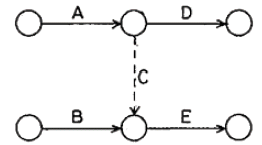
- 작업은 A 에서 D 방향으로 흐른다.
- 작업은 A 에서 E 방향으로 흐른다.
- 작업은 B 에서 D 방향으로 흐른다.
- 작업은 B 에서 E 방향으로 흐른다.
(정답률: 77%)
120. 조경 수목 유지 관리작업 계획시 정기적인 작업에 속하지 않는 것은?
- 전정
- 시비
- 병해충 방제
- 관수
(정답률: 59%)